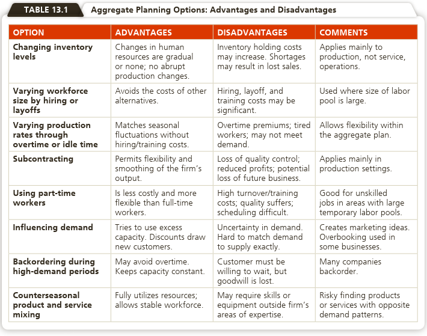
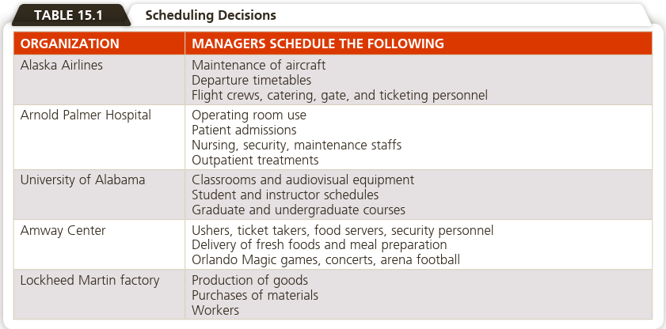
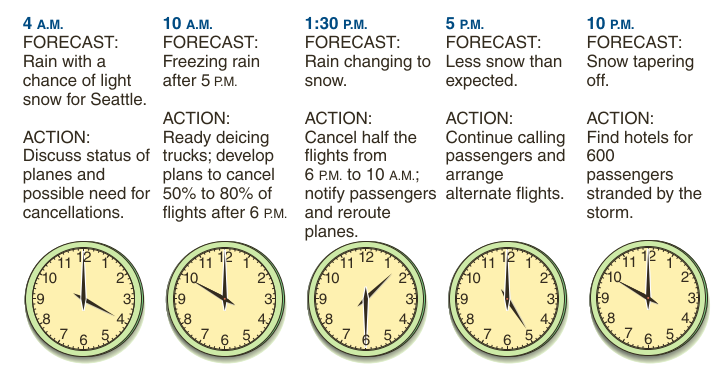
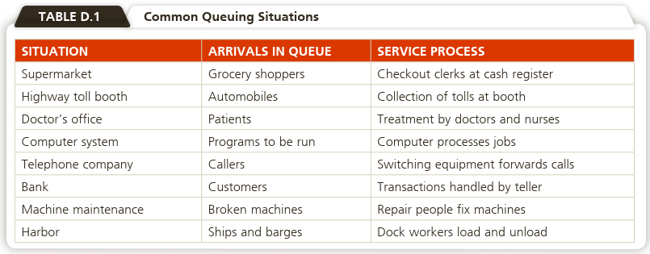
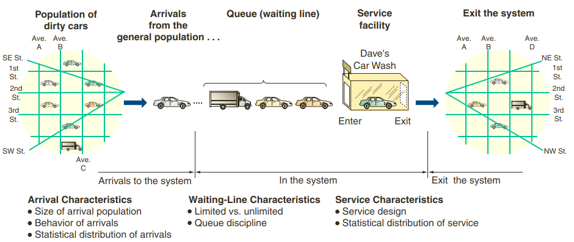
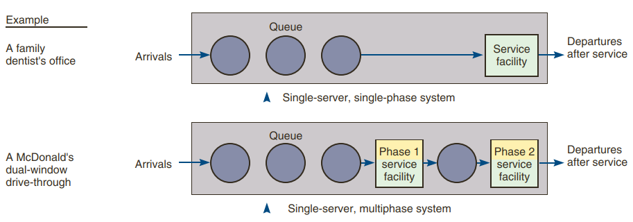
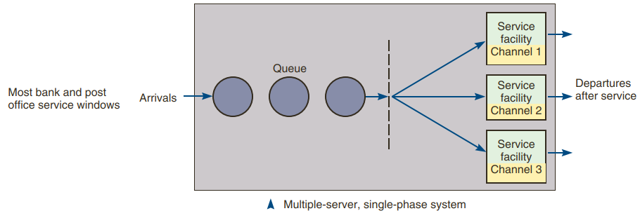
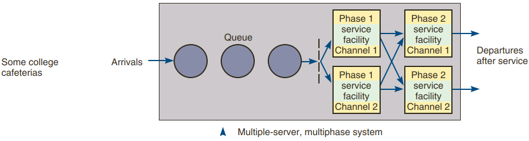
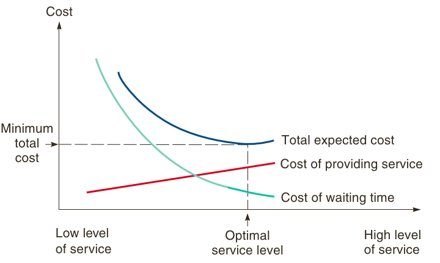

PENDAHULUAN
Proses produksi memerlukan perencanaan dan penjadwalan proses secara
terstruktur untuk menghindari overload dan underload
baik yang dialami oleh karyawan maupun mesin-mesin yang digunakan dalam
proses produksi.
Secara umum setelah mempelajari modul ini, mahasiswa diharapkan dapat
menjelaskan pengertian perencanaan dan penjadwalan, perlunya dilakukan
perencanaan dan penjadwalan produksi dan layanan, berbagai metode yang
dapat digunakan dalam perencanaan dan penjadwalan produksi.
Secara khusus, setelah mempelajari modul ini, mahasiswa diharapkan
mampu:
KEGIATAN
BELAJAR 1: Perencanaan dan Penjadwalan Agregat
Sifat Perencanaan Agregat
- The objective of aggregate planning is usually to meet forecast
demand while minimizing cost over the planning period.
- However, other strategic issues may be more important than low
cost.
- These strategies may be to smooth employment, to drive down
inventory levels, or to meet a high level of service, regardless of
cost.
- Examples:
- An aggregate plan for BMW tells the auto manufacturer how many cars
to make but not how many should be two-door vs. four-door or red
vs. green.
- It tells Steel factory how many tons of steel to produce but does
not differentiate grades of steel.
Strategi-Strategi
Perencanaan Agregat
Ketika merancang perencanaan agregat, manajer operasi harus menjawab
beberapa pertanyaan berikut:
- Should inventories be used to absorb changes in demand during the
planning period?
- Should changes be accommodated by varying the size of the
workforce?
- Should part-timers be used, or should overtime and idle time absorb
fluctuations?
- Should subcontractors be used on fluctuating orders so a stable
workforce can be maintained?
- Should prices or other factors be changed to influence demand?
Opsi-Opsi Perencanaan
Agregat

Sumber: Heizer, et. al. (2020)
KEGIATAN BELAJAR
2: Penjadwalan Jangka Pendek
Pentingnya Penjadwalan
Jangka Pendek
Perhatikan Contoh-Contoh
Berikut:
Jadi Peran Strategis Penjadwalan adalah:
- Secara internal: effective scheduling means faster
movement of goods and services through a facility and greater use of
assets. The result is greater capacity per money invested, which
translates into lower costs.
- Secara eksternal: good scheduling provides faster
throughput, added flexibility, and more dependable delivery, improving
customer service.
Permasalahan-Permasalahan
Penjadwalan

Sumber: Heizer, et. al. (2020)
Forward and Backward
Scheduling
- Forward scheduling starts the schedule as soon as the job
requirements are known.
- Forward scheduling is used in organizations such as hospitals,
clinics, restaurants, and machine tool manufacturers.
- In these facilities, jobs are performed to customer order, and
delivery is typically scheduled at the earliest possible date.
- Backward scheduling begins with the due date, scheduling the final
operation first.
- Steps within the job are then scheduled, one at a time, in reverse
order.
- By subtracting the time needed for each item, the start time is
obtained.
- Backward scheduling is used in manufacturing environments, as well
as service environments such as catering a banquet or scheduling
surgery.
–> In practice, a combination of forward and backward scheduling
is often used to find a reasonable trade-off between capacity
constraints and customer expectations.
Metode Pengurutan (Sequencing
Jobs)
Sequencing (often called dispatching) is accomplished by
specifying the priority rules to use to release (dispatch) jobs to each
work center.
Priority rules are especially applicable for process-focused
facilities such as clinics, print shops, and manufacturing job
shops.
The most popular priority rules are:
- FCFS: first come, first served. Jobs are completed
in the order they arrived.
- SPT: shortest processing time. Jobs with the
shortest processing times are assigned first.
- EDD: earliest due date. Earliest due date jobs are
assigned first.
- LPT: longest processing time. Jobs with the longest
processing time are assigned first.
No one sequencing rule always excels on all criteria:
- Shortest processing time (SPT) is generally the best technique for
minimizing job flow and minimizing the average number of jobs in the
system. Its chief disadvantage is that long-duration jobs may be
continuously pushed back in priority in favour of short-duration jobs.
Customers may view this dimly, and a periodic adjustment for longer jobs
must be made.
- First come, first served (FCFS) does not score well on most criteria
(but neither does it score particularly poorly). It has the advantage,
however, of appearing fair to customers, which is important in service
systems.
- Earliest due date (EDD) minimizes maximum tardiness, which may be
necessary for jobs that have a very heavy penalty after a certain date.
In general, EDD works well when lateness is an issue.
Penjadwalan Layanan
Penjadwalan sistem layanan berbeda dari penjadwalan manufactur dalam
beberapa aspek:
- In manufacturing, the scheduling emphasis is on machines and
materials; in services, it is on staffing levels.
- Inventories can help smooth demand for manufacturers, but many
service systems do not maintain inventories.
- Services are labour intensive, and the demand for this labour can be
highly variable.
- Legal considerations, such as wage and hour laws and union contracts
that limit hours worked per shift, week, or month, constrain scheduling
decisions.
- Because services usually schedule people (rather than material),
social, fatigue, seniority, and status issues complicate
scheduling.
Contoh-Contoh
Kompleksitas Penjadwalan Layanan
Rumah Sakit
A hospital is an example of a service facility that may use a
scheduling system every bit as complex as one found in a job shop.
Hospitals seldom use a machine shop priority system such as first come,
first served (FCFS) for treating emergency patients, but they often use
FCFS within a priority class, a “triage” approach. And they often
schedule products (such as surgeries) just like a factory, maintaining
excess capacity to meet wide variations in demand.
Bank
Banks Cross-training of the workforce in a bank allows loan officers
and other managers to provide short-term help for tellers if there is a
surge in demand. Banks also employ parttime personnel to provide a
variable capacity.
Ritel
Retail Stores Scheduling optimization systems, such as Workbrain,
Cybershift, and Kronos, are used at retailers including Walmart, Payless
Shoes, and Target. These systems track individual store sales,
transactions, units sold, and customer traffic in 15-minute increments
to create work schedules. Walmart’s 2.3 million and Target’s 350,000
employees used to take thousands of managers’ hours to schedule; now
staffing is drawn up nationwide in a few hours, and customer checkout
experience has improved dramatically.
Buka 24 jam/7 hari
24/7 Operations Emergency hotlines, police/fire departments,
telephone operations, and mail-order businesses (such as L.L.Bean)
schedule employees 24 hours a day, 7 days a week. To allow management
flexibility in staffing, sometimes part-time workers can be employed.
This provides both benefits (in using odd shift lengths or matching
anticipated workloads) and difficulties (from the large number of
possible alternatives in terms of days off, lunch hour times, rest
periods, starting times). Most companies use computerized scheduling
systems to cope with these complexities.
Penerbangan

Kegiatan
Belajar 3: Teori Antrean (Queuing Theory)
Queuing theory, is an important part of operations and a valuable
tool for the operations manager.
Mengantri adalah situasi yang umum terjadi:
- mobil mau masuk/keluar jalan tol
- pasien di rumah sakit atau praktek dokter
- wisuda sarjana…hmm

Sumber: Heizer, et. al. (2020)
Karakteristik Sistem Garis
Tunggu
The three parts of a waiting-line, or queuing, system:
- Arrivals or inputs to the system: These have characteristics such as
population size, behaviour, and a statistical distribution.
- Queue discipline, or the waiting line itself: Characteristics of the
queue include whether it is limited or unlimited in length and the
discipline of people or items in it.
- The service facility: Its characteristics include its design and the
statistical distribution of service times.
Arrival Characteristics
The input source that generates arrivals or customers for a service
system has three majorcharacteristics:
- Size of the arrival population
- Behavior of arrivals
- Pattern of arrivals (statistical distribution)
Waiting-Line Characteristics
The length of a line can be either limited or unlimited.
A queue is limited when it cannot, either by law or because of
physical restrictions, increase to an infinite length.
A small barbershop, for example, will have only a limited number
of waiting chairs.
A queue is unlimited when its size is unrestricted, as in the
case of the toll booth serving arriving automobiles.
A second waiting-line characteristic deals with queue
discipline.
This refers to the rule by which customers in the line are to
receive service. Most systems use a queue discipline known as the
first-in, first-out (FIFO) rule.
In a hospital emergency room or an express checkout line at a
supermarket, however, various assigned priorities may preempt
FIFO.
Patients who are critically injured will move ahead in treatment
priority over patients with broken fingers or noses.
Shoppers with fewer than 10 items may be allowed to enter the
express checkout queue (but are then treated as first-come,
first-served).
Computer-programming runs also operate under priority
scheduling.
Service Characteristics
- The third part of any queuing system is the service
characteristics.
- Two basic properties are important: (1) design of the service system
and (2) the distribution of service times.

Pelayanan dengan
Single Channel System

Pelayanan dengan
Multi Channel System


Sumber: Heizer, et. al. (2020)
Trade-off
antara waiting costs dengan service costs

Model Simulasi
Simulation is the attempt to duplicate the features, appearance,
and characteristics of a real system.
The idea behind simulation is threefold:
- To imitate a real-world situation mathematically
- Then to study its properties and operating characteristics
- Finally, to draw conclusions and make action decisions based on the
results of the simulation
To use simulation, an OM manager should:
- Define the problem.
- Introduce the important variables associated with the problem.
- Construct a numerical model.
- Set up possible courses of action for testing by specifying values
of variables.
- Run the experiment.
- Consider the results (possibly modifying the model or changing data
inputs).
- Decide what course of action to take.
Keuntungan dan Kerugian
Simulasi
The main advantages of simulation are as follows:
- It can be used to analyze large and complex real-world situations
that cannot be solved by conventional operations management models.
- Real-world complications can be included that most OM models cannot
permit. For example, simulation can use any probability distribution the
user defines; it does not require standard distributions.
- “Time compression” is possible. The effects of OM policies over many
months or years can be obtained by computer simulation in a short
time.
- Simulation allows “what-if ?” types of questions. Managers like to
know in advance what options will be most attractive. With a
computerized model, a manager can try out several policy decisions
within a matter of minutes.
- Simulations do not interfere with real-world systems. It may be too
disruptive, for example, to experiment physically with new policies or
ideas in a hospital or manufacturing plant.
The main disadvantages of simulation are as follows:
- Good simulation models can take a long time to develop.
- It is a repetitive approach that may produce different solutions in
repeated runs. It does not generate optimal solutions to problems (as
does linear programming).
- Managers must generate all of the conditions and constraints for
solutions that they want to examine. The simulation model does not
produce answers without adequate, realistic input.
- Each simulation model is unique. Its solutions and inferences are
not usually transferable to other problems.